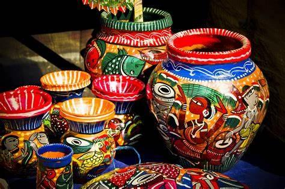
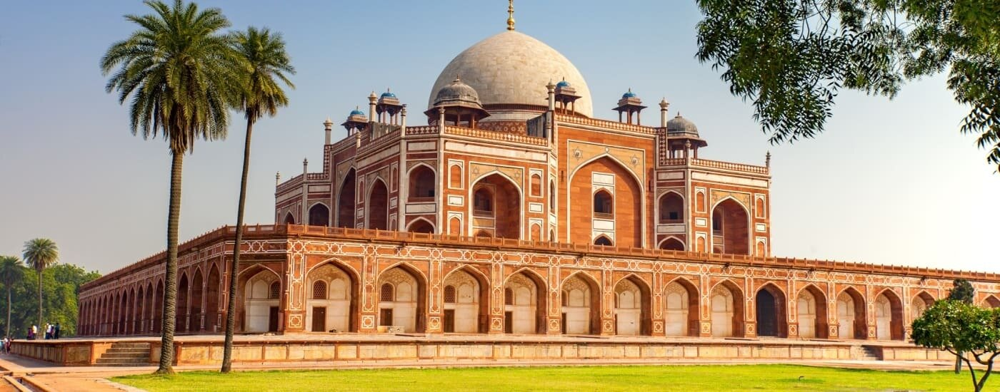
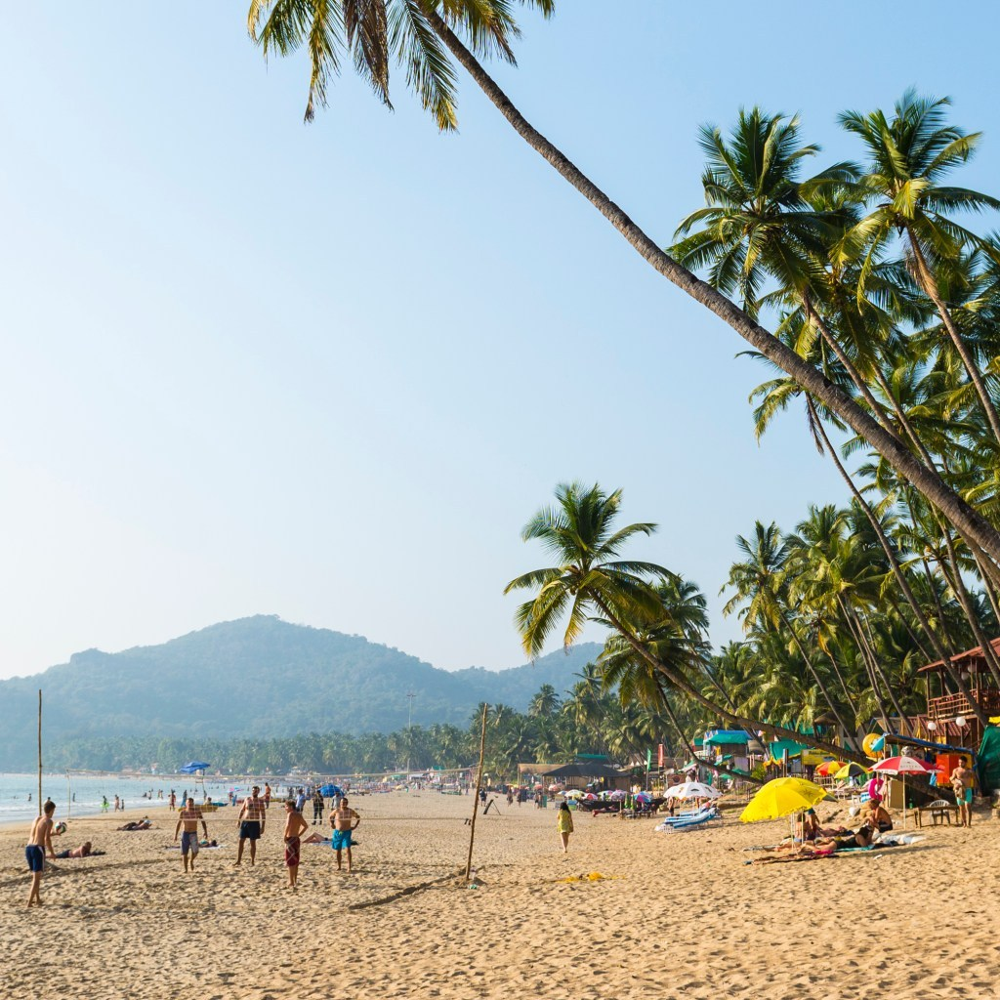

India is a vast and diverse country located in South Asia.
It is the seventh-largest country in the world and one of the most populated nations.
India is known for unity in diversity, where people of different cultures, languages, and religions live together.
The country blends ancient traditions with modern development.
History and Background
India has one of the oldest and richest histories in the world.
Its civilization began thousands of years ago with the Indus Valley Civilization, which was known for planned cities and advanced culture.
Over time, India was ruled by many powerful dynasties and kingdoms that contributed to art, science, literature, and architecture.
India became a center of learning, trade, and culture in ancient and medieval times.
Different religions and cultures developed and coexisted, shaping India’s diverse identity.
During British rule, India experienced major political and social changes.
India gained independence in 1947 after a long freedom struggle led by great leaders.
After independence, India adopted a democratic system and became the world’s largest democracy.
Today, India preserves its ancient heritage while growing as a modern and developing nation.
Culture And Tradition

India has one of the oldest and most diverse cultures in the world.
Its culture has developed over thousands of years and is influenced by history, geography, and beliefs.
People of different religions, languages, and communities live together, making India a land of unity in diversity.
Family values play an important role in Indian society.
Respect for elders, strong family bonds, and hospitality are deeply rooted traditions.
Guests are treated with warmth and respect, which reflects Indian values.
Indian culture is expressed through music, dance, art, literature, and handicrafts.
Classical and folk traditions are passed from one generation to another.
Traditional clothing and customs are followed during festivals, ceremonies, and daily life in many regions.
Religion and spirituality are also important parts of Indian tradition.
Rituals, prayers, and festivals are celebrated with devotion and joy.
Despite modernization, Indians continue to preserve their cultural heritage while adapting to modern lifestyles.
Overall, Indian culture and tradition reflect harmony, respect, and a deep connection to history.
Art, music, dance, and handicrafts reflect India’s cultural richness.
Festivals
India celebrates a wide variety of festivals throughout the year, reflecting its rich culture and traditions.
Festivals in India are connected to religion, seasons, harvests, and historical events.
They bring people together and spread joy, unity, and cultural harmony.
Some of the most widely celebrated festivals include Diwali, the festival of lights, which symbolizes the victory of good over evil.
Holi, the festival of colors, is celebrated with joy, music, and togetherness.
Eid is celebrated by the Muslim community with prayers, charity, and feasts.
Christmas is celebrated with decorations, lights, and gatherings, spreading the message of peace and love.
Navratri and Durga Puja are celebrated with devotion, dance, and cultural programs.
Harvest festivals like Pongal, Baisakhi, and Onam celebrate prosperity and nature.
During festivals, people wear traditional clothes, decorate their homes, and prepare special food.
These celebrations strengthen social bonds and help preserve India’s cultural heritage.
Festivals play an important role in promoting unity in diversity across the country.
Geography
India has a very diverse and rich geographical landscape.
The country is located in South Asia and covers a wide range of physical features.
Its geography plays an important role in shaping climate, culture, and lifestyle.
India is home to the Himalayan mountain range, which forms a natural barrier in the north.
The Indo-Gangetic plains are fertile regions that support agriculture and large populations.
In the west lies the Thar Desert, while the Deccan Plateau covers much of southern India.
India has many important rivers that support farming and daily life.
The country also has a long coastline along the Arabian Sea, Bay of Bengal, and Indian Ocean.
Different regions experience different climates, from cold mountains to tropical coastal areas.
India’s geographical diversity supports rich forests, wildlife, and natural resources.
This variety makes India one of the most geographically diverse countries in the world.
Tourism


India is one of the most popular tourist destinations in the world.
It attracts visitors because of its rich history, cultural diversity, and natural beauty.
Tourism in India offers a wide range of experiences for different interests.
India is famous for its historical and heritage tourism, including ancient monuments, forts, palaces, and UNESCO World Heritage Sites.
Cultural tourism allows visitors to experience traditional art, music, dance, festivals, and local lifestyles.
India is also known for religious and spiritual tourism, with sacred places visited by millions of pilgrims every year.
The country offers natural tourism such as hill stations, beaches, deserts, forests, and wildlife sanctuaries.
Adventure tourism, eco-tourism, and wellness tourism are also growing in popularity.
Tourism plays an important role in India’s economy and provides employment to many people.
Overall, tourism in India reflects the country’s diversity, traditions, and natural richness.
Heritage Tourism:
India is famous for its historical monuments, forts, palaces, and ancient sites.
These places reflect India’s rich history and architectural heritage.
Cultural Tourism:
Cultural tourism allows visitors to experience Indian traditions, art, music, dance,
handicrafts, and local lifestyles.
Religious and Spiritual Tourism:
India is home to many important religious sites visited by pilgrims from around the world.
These places offer peace, faith, and spiritual experience.
Natural Tourism:
India has diverse natural landscapes including mountains, beaches, deserts, forests,
rivers, and wildlife sanctuaries.
Adventure and Eco-Tourism:
Adventure activities and eco-friendly travel are growing in popularity.
These forms of tourism promote nature conservation and sustainable travel.
Wellness Tourism:
India is well known for yoga, meditation, and traditional healing practices.
Many visitors come for relaxation, health, and well-being.
Tourism in India plays an important role in promoting culture, generating employment,
and supporting economic development.